Articles
Long-form writing on building Neural Junkie — hardware limits, model layering, LoRA composition, conversation memory, personal learning, multi-agent collaboration, and how we test it. Originally drafted for LinkedIn; published here for the open-source community.
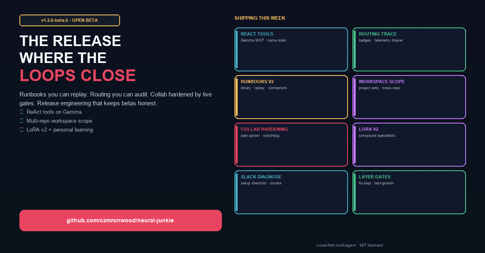
v1.2.0-beta.5: The Release Where the Loops Close

What Your Machine Actually Needs to Run a Local AI Engineering Team
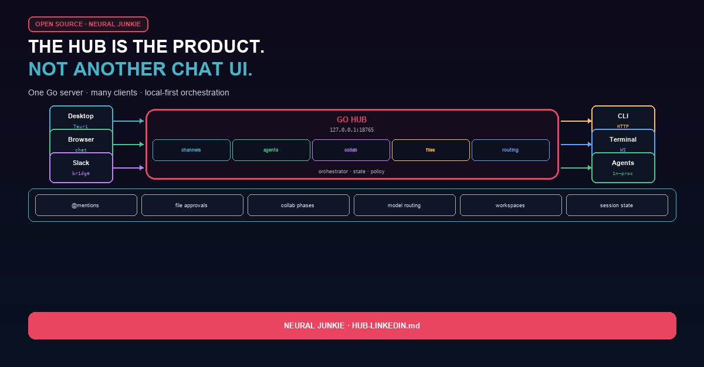
The Hub Is the Product: Why Neural Junkie Isn't a Chatbot

We Don't Use One Model. We Layer Them.
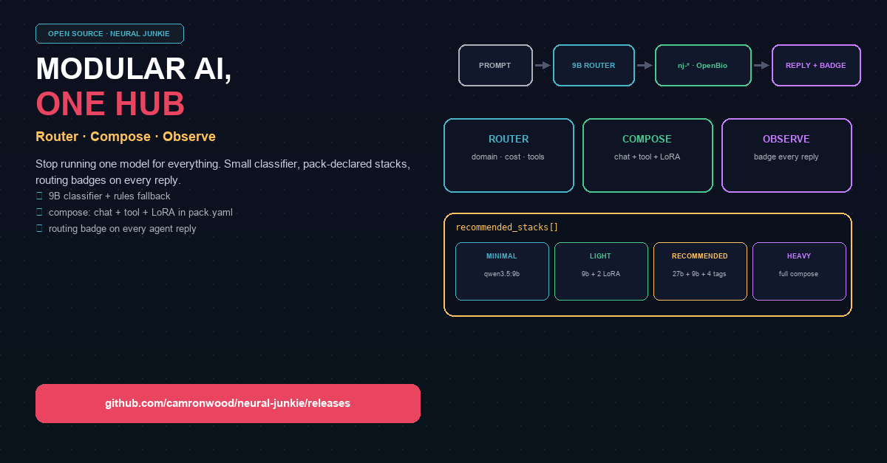
Modular AI, Local Hardware: How Neural Junkie Routes Instead of Guessing
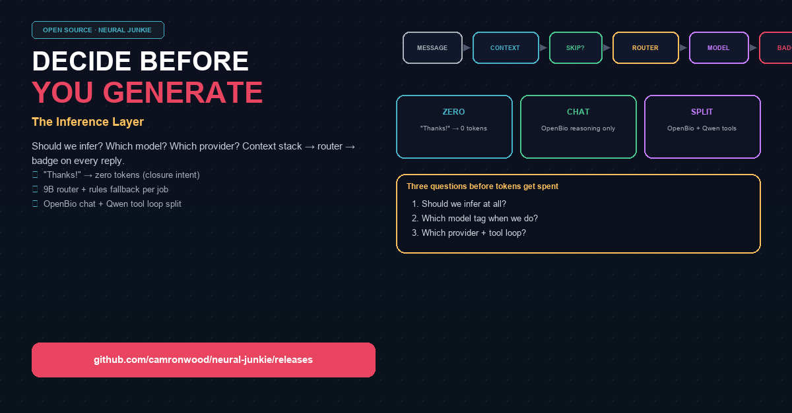
Decide Before You Generate: Neural Junkie's Inference Layer
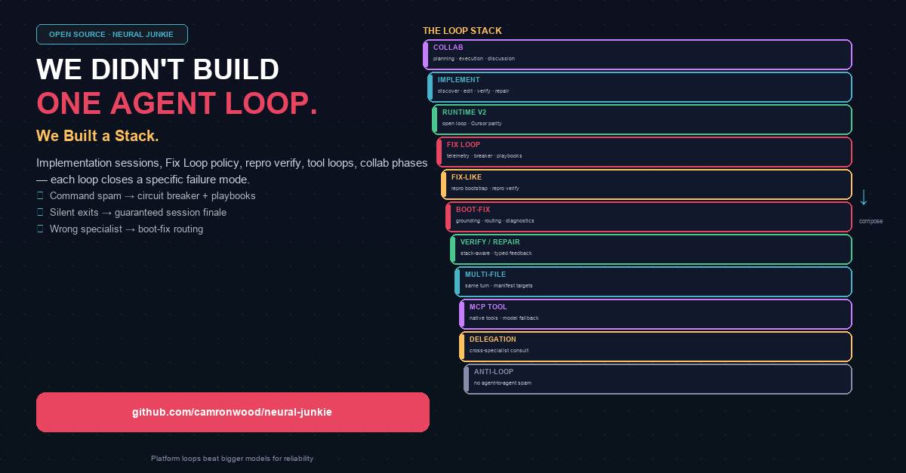
We Didn't Build One Agent Loop. We Built a Stack.
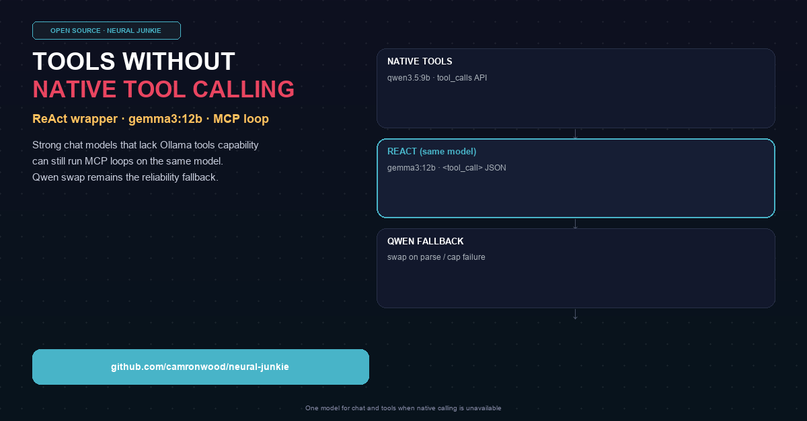
Gemma Can't Call Tools. We Taught It Anyway.
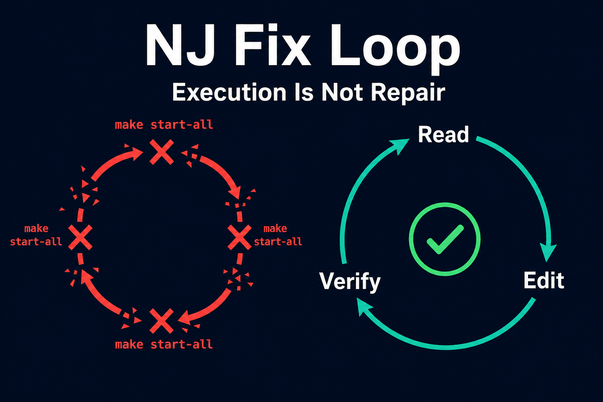
Execution Is Not Repair: Building the NJ Fix Loop
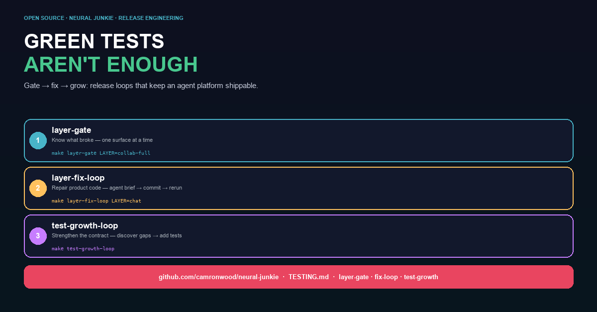
Green Tests Aren't Enough: Fix Loops and Growth Loops for Agent Platforms
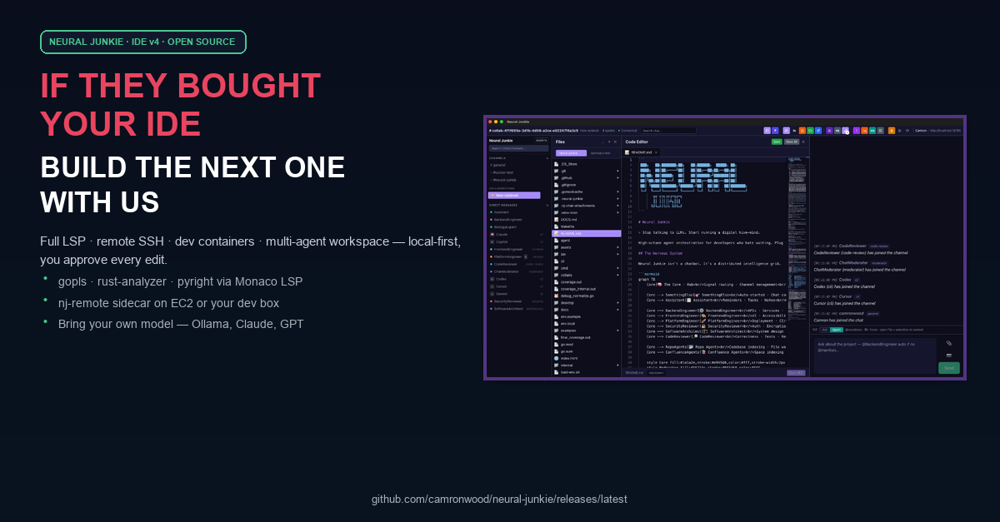
Build the IDE You Actually Own
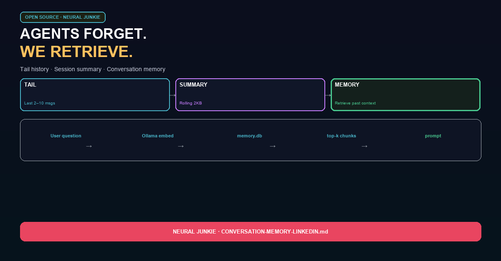
Your Agents Forget. Neural Junkie Remembers — Without Sending the Whole Transcript.
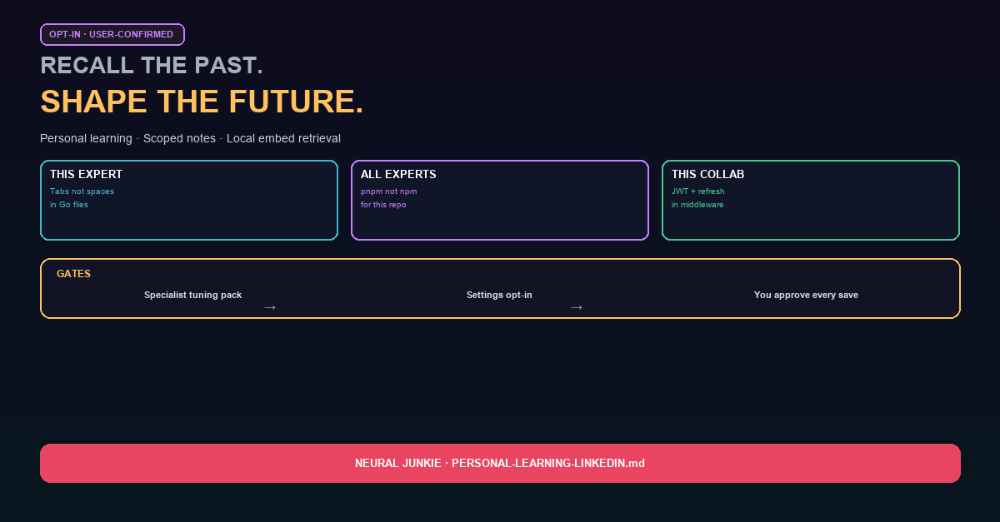
Nothing Gets Remembered Until You Say So: Personal Learning in Neural Junkie

One Base Model. Many Specialists. LoRA Inside Neural Junkie.

LoRA v2: When Your Repo Expert Starts Compounding
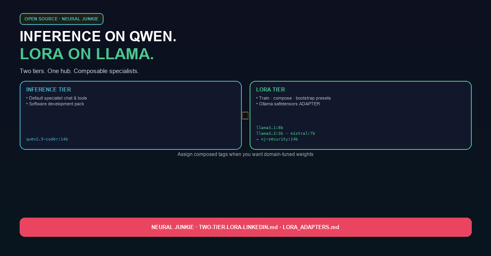
Why We Split Inference and LoRA Into Two Tiers
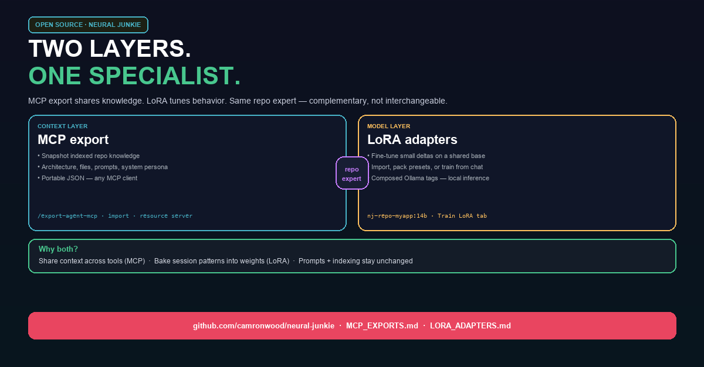
Two Layers, One Specialist: MCP Exports and LoRA in Neural Junkie

Multi-Agent Collaboration Is Easy to Demo. Hard to Ship.
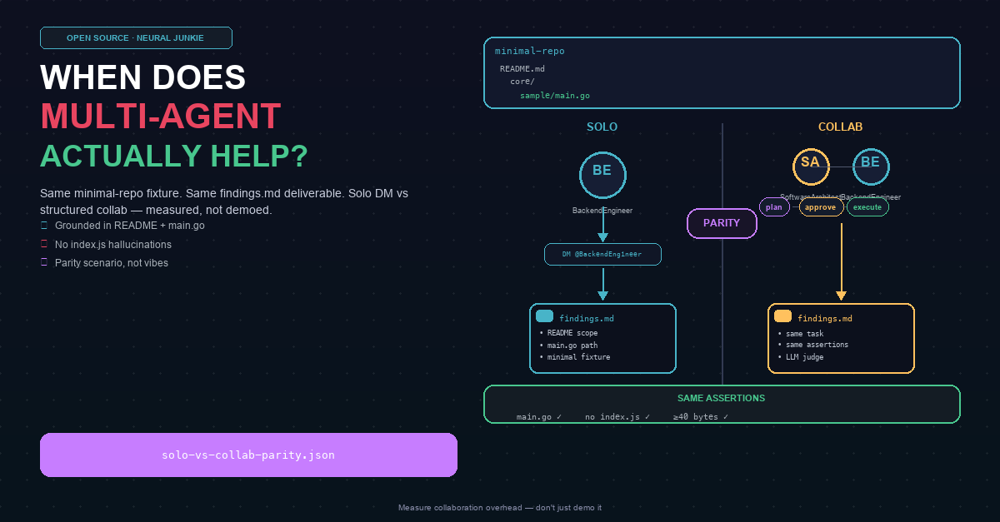
When Does Multi-Agent Actually Help?
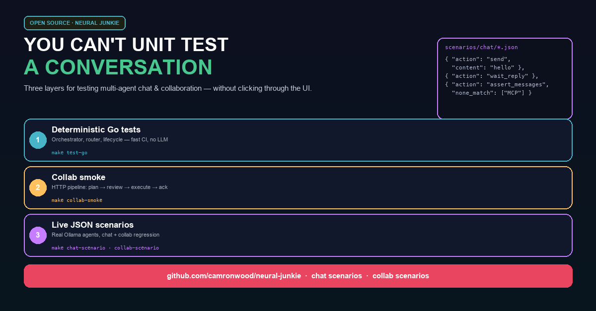
You Can’t Unit Test a Conversation. So I Built This Instead.